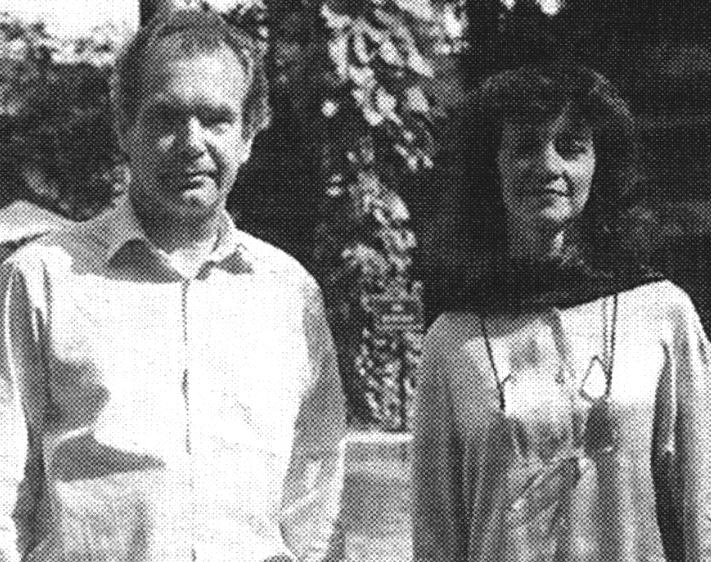

|
(Calcutta) Telegraph. Buzzwords (section). 3 January 2001, p. 5. Cambridge historians Chris and Susan Bayly talk of a shared passion to Damayanti Datta  On their way back to UK from an exciting trip to Vietnam and Malaysia, Chris and Susan Bayly - two of the most eminent Indianists at Cambridge - spent the last week of the millennial year in Calcutta. The current understanding of South Asian history has been shaped by many scholars, but few have had so wide an influence as Christopher A. Bayly -- Vere Harmsworth Professor of Naval and Imperial History and Fellow of St Catharine's College, Cambridge. Similarly, Susan B. Bayly - Fellow of Christ's College and teacher of history and social anthropology at Cambridge - has greatly enriched the study of India by her scholarship. For students of Indian history, the Baylys have become household names as reference points, despite being of the hotly contested Cambridge school. Q: Both of you specialised in South Asian history. What prompted this? Susan Bayly: Like so many undergraduates of my generation, I had thought it would be fascinating to visit India. I did, fell in love, and thought "This is for me". I also had first-rate teaching and very committed teachers with strong critical intelligence to influence me. As an undergraduate at Kent, I was taught by Anthony Copeley who's written on Bengal, and Roger Anstey a historian of the Caribbean and of the anti-slavery movement. A combination of two overseas extra-European areas gave me some sense that it may be possible to do something with my enthusiasm at being in India. I became Eric Stokes' research student in Cambridge. He was very encouraging of my desire to work on South India and on religion, caste and society. Chris Bayly: I also had very stimulating teachers. At Oxford I was influenced by Jack Gallagher, who was an ironic and amusing teacher and who encouraged me to go to India in my summer vacation. But I think the real reason was that my father was an officer in the British merchant navy and travelled out to India and the Far East constantly. Apprenticed at the age of 15 in the 1930s, he spent most of the first half of his life at sea, came back to teach geography and was full of stories about all the places he visited. So I think there was a background of interest in the wider world. When I announced I wanted to go to India, travelling overland in 1965, he was quite supportive. I became fascinated with India - partly I think, because it was possible to do history And I could see things, even as an undergraduate, which would be worth doing. I was also stimulated by professors S. Gopal and Ashin Dasgupta, who had been in Oxford. Q: Where does India figure in mainstream British historical discourse? CB: There's been an interesting development here. If you'd asked me 20 years ago, I'd have said Indian history is broadly marginal. But in the last 10 years, that has changed because of a breaking down of the assumption that British identity is primordial. The English historians have become British historians and British historians have become historians of the Empire, because they're beginning to see that it relates to their essential concerns. The other development is in the US, where British history has become less important. British historians have survived by reinventing themselves as imperial or global historians. The trends are now to bring India and other parts of the Empire away from the margin. SB: Also, the convention of discipline-specificity is changing rapidly. The status of India specialists in current debates (say, anthropology) is taken particularly seriously. I really think it would be inconceivable for a young anthropologist to engage with almost any area without an interest in post-colonial theory as articulated by India specialists. The phrase `subaltern studies' is on every lip. I'd say the study of South Asia has nourished a whole range of areas. Q: You've had many Indian students. Is there anything peculiar to them? SB: Oh, their love of argument, I'd say! Love of a good theoretical controversy; excellent grounding in writing; lively, literate speech are hallmarks. They often have lively and persevering fieldwork skills. I've had superb students: products of JNU, who were taught by Veena Das, André Béteille, and others. I think we've been hugely lucky, partly due to the generosity of various scholarship funds and foundations that have made study in Cambridge possible for students of this very, very high quality. CB: The great strength of the Indian student has been extreme interest in theoretical debate, and a capacity and enthusiasm to engage with arguments. And also, I'd say, the realisation all the time that this is a political subject. If they have a weakness, it is in adjusting to writing rapidly, which some of our students (because of the tutorial system) are trained to do. This problem, however, almost always disappears by their final year of PhD. Q: Why do you think Indian students abroad tend to work only on India, while those of the First World often research other societies and cultures? CB: The answer to that is very simple. Those Indians who have done so have found it very difficult to get jobs back in Indian universities. Indeed, now that many go on to Europe or America, they would be hired as Indianists. So there's no incentive. This is a great pity. Even the great historian Parthasarathi Gupta, a major expert on British labour history, couldn't pursue it and became a historian of India. Q: Both of you have been teachers and prolific researchers. How do you balance the two? CB: A good thing about Oxbridge is that terms are relatively short - nine weeks. And although teaching is extremely intensive - many of us take on 12 to 15 hours of tutorial-type teaching - we have struggled very hard to keep the vacations as research periods, especially the long ones in summer; or the balance disappears. I sometimes think it will be quite a problem in the next 20 years, to keep the same degree of student contact and of publication output. Administration takes up more and more of our time, which acts as a deadweight on teaching and research. Q: Does teaching, then, complement research? SB: Very much so. I strongly believe that first-rate teaching and research interact. That's one of the arguments against those who discourage academics doing both. In the Oxbridge system, I'd be sorry to lose the strength of the college system. The colleges are important bases for students and provide almost pastoral care, helping students reach their potential. I have been a tutor in my college and it's very different from the meaningless administration senior people often get sucked into. Q: Both of you have undertaken long field trips in India. What have been your best and worst moments? SB: I particularly enjoyed the long periods I lived in Tuticorin, Tirunalveli and Thiruvananthapuram. I was a research student and one of very few foreign - particularly female and young - scholars. I was almost adopted into a number of Indian families and looked after very well. That meant things like getting up at 3 0' clock in the morning to go off to the village festival, with the grandmother of the family giving me my morning masala dosas and sending me off to my field observations. I loved it. Those are my happiest memories. I have very fond memories of being given lunch in villages as a kind of public spectacle. I was the honoured guest, having an entire community observe me trying to eat my delicious lunch with my right hand, with proper etiquette. CB: For me, the high point was getting to know communities in Allahabad and Benaras 20 years back - going out in the evenings to local Sufi peers; going down to the old city; sitting with the merchants, who would bring out their bahi-khathas and talk about the old days. It wasn't simply an interview, but getting to know the community. In Benaras, I remember when a group of sadhus turned up to ask for the rent of the house we were living in. You realise you still have distant echoes of the economy and social systems of 18th century Benaras. I remember a `maha paan' I was given as a farewell gift by some people I interviewed. It was huge and priced at Rs 30. My face became pleasantly numb as I chewed and I wondered precisely what it contained! Of course, one is much more resilient when younger! Back to the top. |
{kind=link}